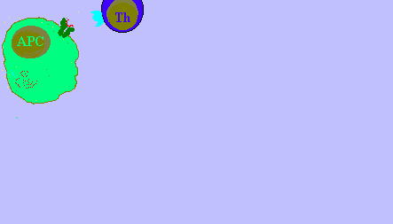
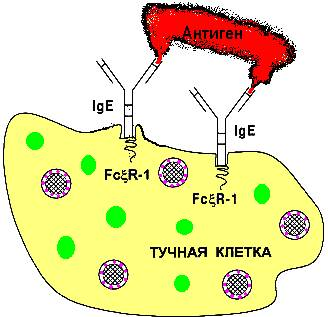
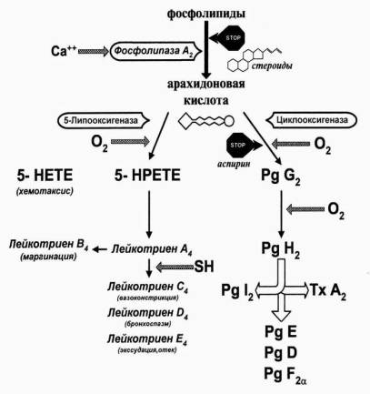

Особые «низкодозовые» механизмы презентации антигена на АПК приводят к преимущественной активации и бласт-трансформации Т-хелперов 2-го типа (Th2).
Пролиферация Th2 сопровождается угнетением дифференцировки клона Th1.
Th2 стимулируют коммитирование В-лимфоцитов и их плазматизацию в популяции, продуцирующие IgE (реагины).

В отсутствие специфического антигена происходит длительная циркуляция свободного IgE. Большая часть иммуноглобулинов E связывается с клетками, несущими рецепторы к Fc-фрагменту:
Благодаря высочайшей плотности и прочности фиксации рецепторов на тучных клетках основная масса IgE сорбируется именно на их мембране.
Фиксированные антитела IgE способны персистировать на поверхности мастоцитов до года. При повторном проникновении антиген связывается сразу с несколькими соседними молекулами IgE (кросс-сшивка), что инициирует немедленную взрывную дегрануляцию тучной клетки с массированным выбросом биологически активных веществ (гистамина, лейкотриенов, простагландинов).

